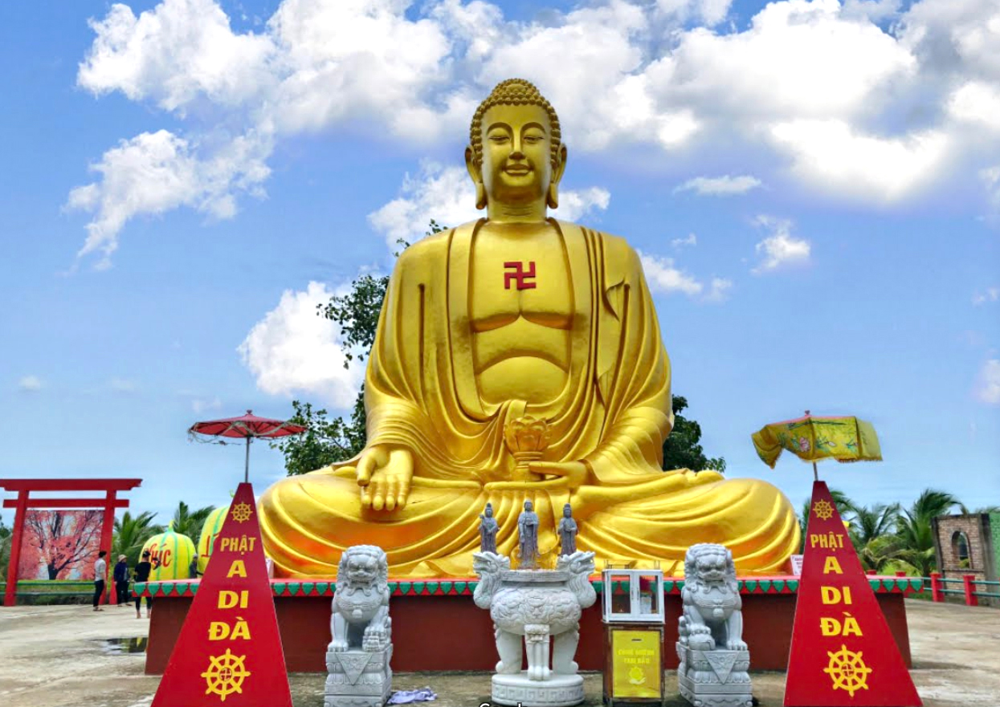
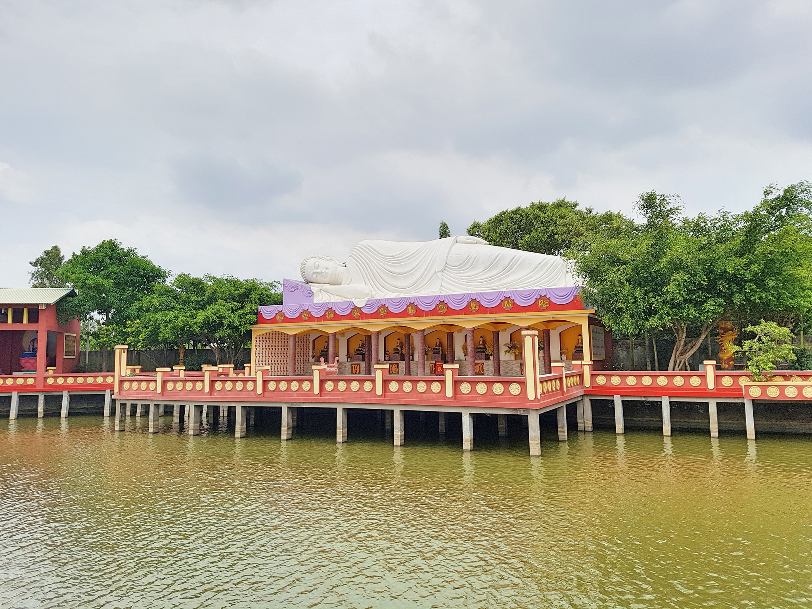
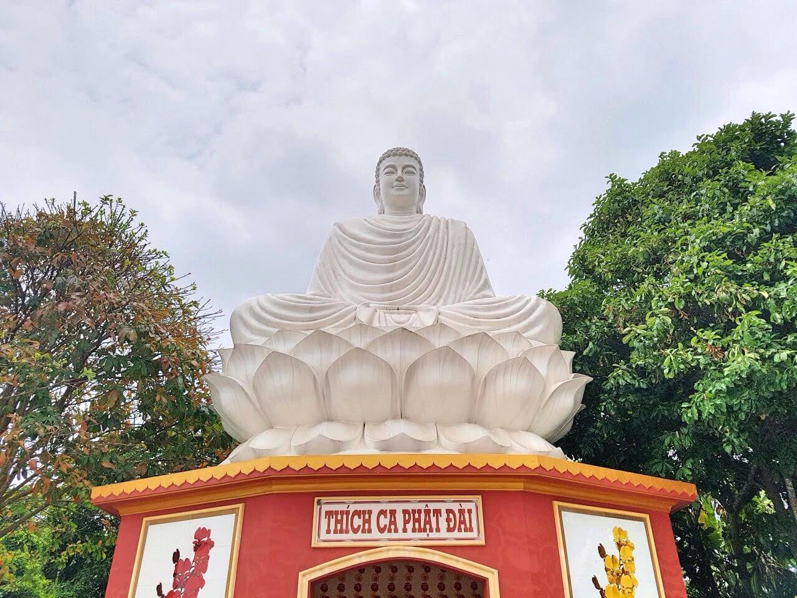
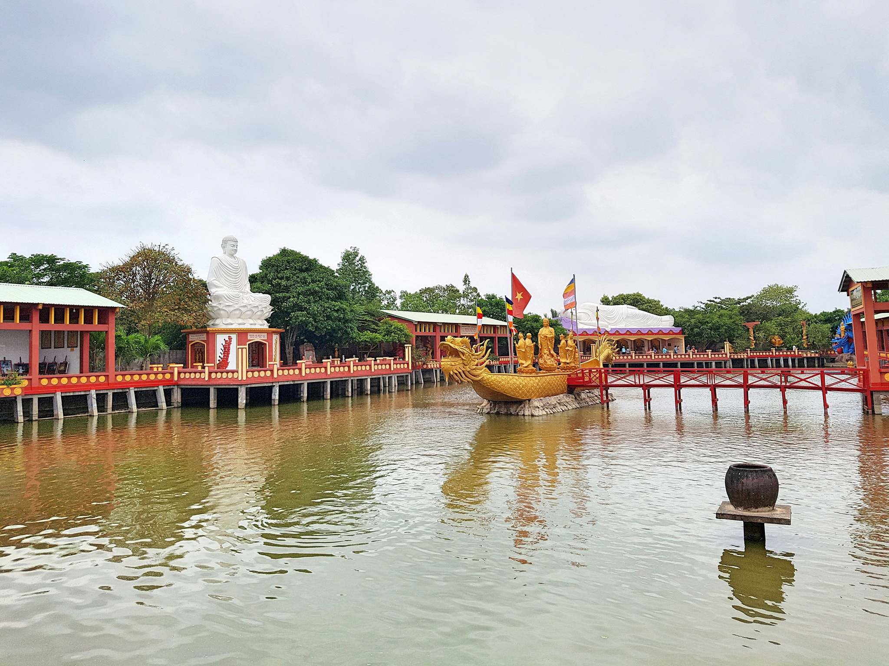
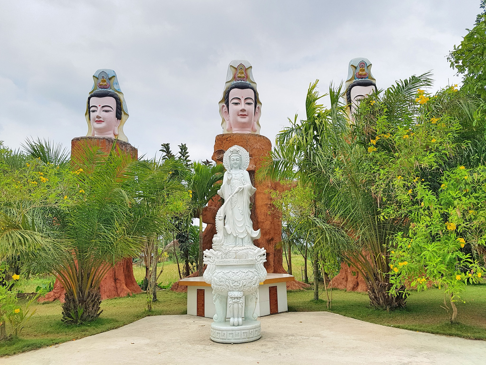

Chùa Phật Học 2 hay còn gọi là Chùa Quan Âm Linh Ứng tọa lạc tại phường 8, TP Sóc Trăng, tỉnh Sóc Trăng, cách trung tâm thành phố khoảng 5km theo tuyến đường Phạm Hùng (về hướng huyện Long Phú). Chùa Phật Học 2 là địa điểm du lịch Sóc Trăng nổi tiếng bởi quanh năm không đốt vàng mã, có diện tích rộng nhất tỉnh Sóc Trăng với nhiều cảnh quan kỳ thú được thiết kế rất công phu mang đầy tính nghệ thuật.
Phật A Di Đà. Nguồn: thamhiemmekong.com
NNăm 2011 Chùa Phật học 2 được khởi công xây dựng với diện tích ban đầu là 1,5 ha, đến nay được mở rộng ra 8,5 ha, bao gồm rất nhiều công trình, hạng mục hoành tráng như nhà giữ xe hàng ngàn m2, dãy phòng khách, mỗi phòng sức chứa 15 người được trang bị mái lạnh cửa gỗ kín đáo sạch sẽ dành cho khách thập phương nghỉ ngơi, lưu trú qua đêm miễn phí, hàng trăm chiếc võng được bố trí dưới những tán cây dịu mát sẵn sàng phục vụ cho khách quá giang giấc nghỉ trưa.
Tượng Phật Nằm. Nguồn: thamhiemmekong.com
Thích Ca Phật Đài. Nguồn: thamhiemmekong.com
Cảm nhận đầu tiên của du khách khi đặt chân đến ngôi chùa này chắc hẳn là sự yên tĩnh, dịu mát bởi không gian chùa rất rộng. Vãn cảnh chùa Phật học 2, du khách sẽ được ngắm nhìn vẻ đẹp uy nghi của tượng Phật Thích Ca đài trong tư thế ngồi với chiều cao 7m với 6 thủ ấn mang ý nghĩa kêu gọi sự hòa bình, giáo hóa lòng từ bi chân thật và bao dung ở con người…; ngoài ra còn có tượng Phật chứng quả Nhập Niết Bàn chiều dài 17m; 20 hóa thân của Đức thể Phật Bà Quan Âm.
Trên chiếc ao to rộng được bố trí tại trung tâm chùa, du khách có thể nhìn ngắm chiếc thuyền bát Nhã không đáy tượng trưng cho trí tuệ, chở 8 vị Phật ngự giữa biển trần, cứu giúp chúng sanh thoát khỏi vòng luân hồi được thiết kế khá uy thiêng như một điểm nhấn tiêu biểu của công trình. Mọi người còn nghe lòng thư thái nhẹ nhàng, khi tự tay cho hàng ngàn con cá óng ánh dưới ao ăn. Nhìn chúng tung mình trên mặt nước như một điệu vũ hòa bình, nhân ái
Chiếc thuyền bát Nhã. Nguồn: thamhiemmekong.com
Tượng Quan Thế Âm. Nguồn: thamhiemmekong.com
Bên cạnh những ngọn núi cao sừng sững, những dòng thác nước chày ào ạt đêm ngày, những đóa sen đỏ thắm góc trời làm phong phú thêm nét đẹp của không gian yên ả của ngôi chùa. Cạnh đó, du khách còn được nghỉ ngơi trên hàng trăm chiếc võng dưới những tàng cây mát dịu; được mượn nón lá để tham quan; được giữ xe miễn phí và nhiều tiện ích khác mà không phải trả tiền.
Lưu ý khi đi tham quan chùa Phật Học 2: Đất Phật linh thiêng, trang nghiêm nên cần ăn mặc chỉnh tề, gọn gàng. Lời nói, hành vi cần giữ đúng mực, tránh phạm húy. Trong khuôn viên chùa có gian hàng đồ chay nên chúng ta có thể thưởng thức, không được dùng đồ mặn.